A public directory and map for your congregation to see, and an admin dashboard to manage support, trips, newsletters, and more behind the scenes. Free and open source — self-host it for your own church.
A searchable partner directory plus an interactive world map with an auto "tour" fly-through. Partners marked restricted are automatically shown with initials only, no contact info, no precise location, and a generic security-conscious description — safe to publish even for partners serving in access-sensitive countries.
Each partner's public page can pull live country statistics from the Joshua Project — population, primary religion, percent evangelical, and how reached the country is — so visitors see the spiritual need behind the mission, not just a bio.
Add, edit, and manage every missionary and organization in one filterable, searchable list, support tracking, trip history & capacity search, furlough/church-visit scheduling, and private newsletter and document uploads — all with role-based user permissions.
Core info, ministry overview, financial support, trips, prayer requests, newsletters, documents, serving location, family and emergency contacts, furlough and church-visit history, and sending church/org details — everything about a partner lives on their one profile page.
Export your full partner list as a printable booklet — one page per partner, photo and all — for a bulletin insert, a missions conference handout, or a binder at the welcome desk.
Filterable reports across prayer requests, support, and trips, so staff and committees can answer "who needs what, and when" without digging through individual partner pages.
Connect a GroupMe group and pick a Topic, and every new prayer request posts there automatically — your prayer team sees it the moment it's added, without anyone checking the admin dashboard.
Branding and About Church settings control the church's name, logo, brand color, and the term it uses for its partners (e.g. "Go Team Partners" instead of "Missionaries") — everything else in the app reads from that instead of hardcoded copy.
A home dashboard, monthly support totals, one-time need requests, mission trip history and opportunity search, a newsletter and document archive, the booklet generator itself, user management, church info, and every other admin-only prayer request in one place.
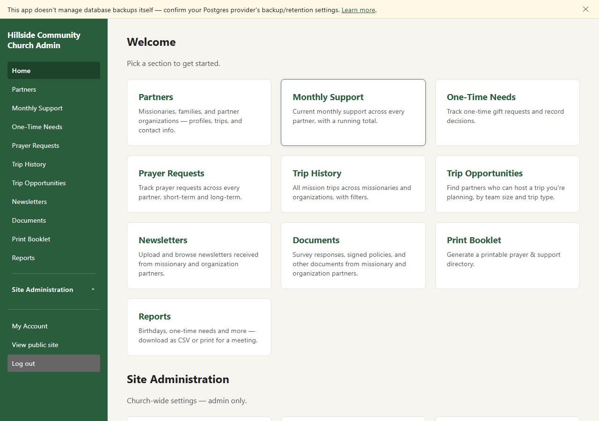
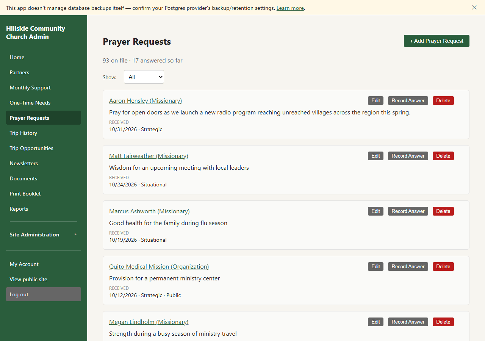
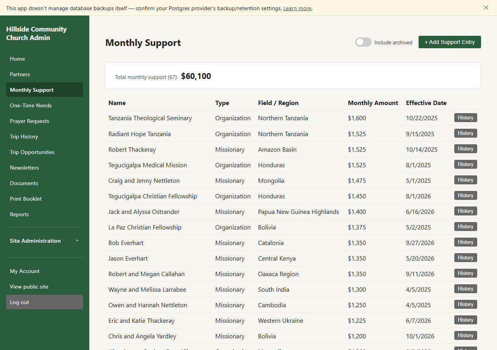
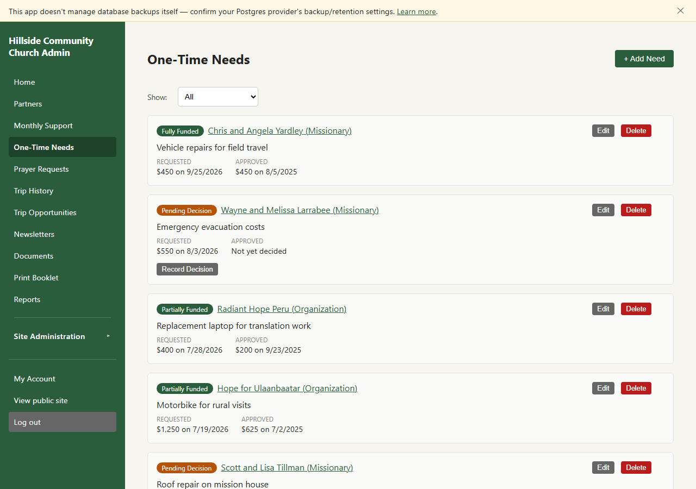
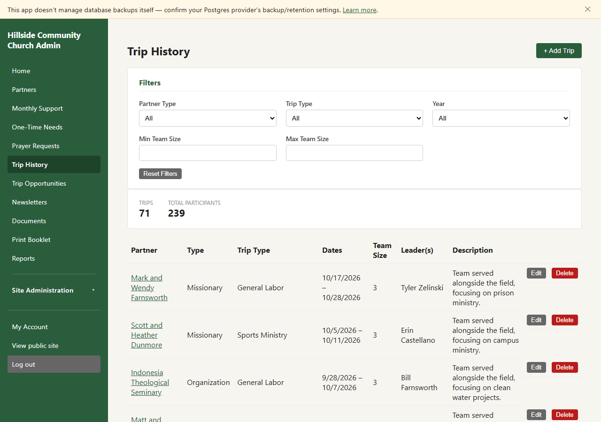
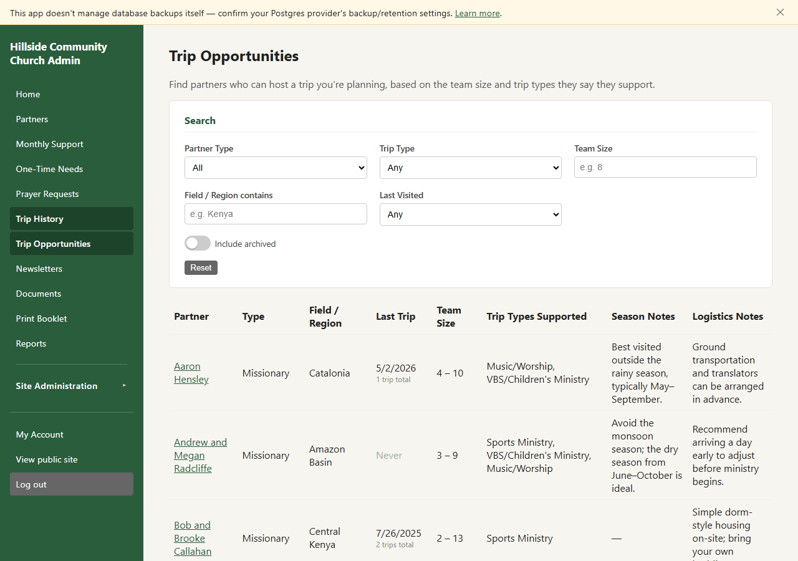
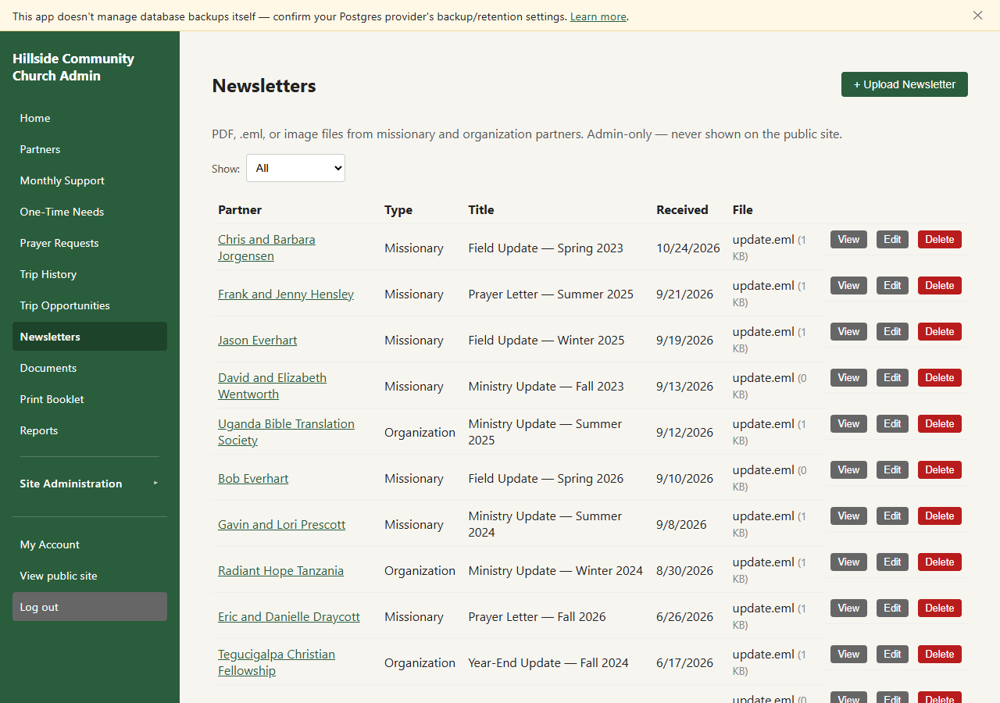
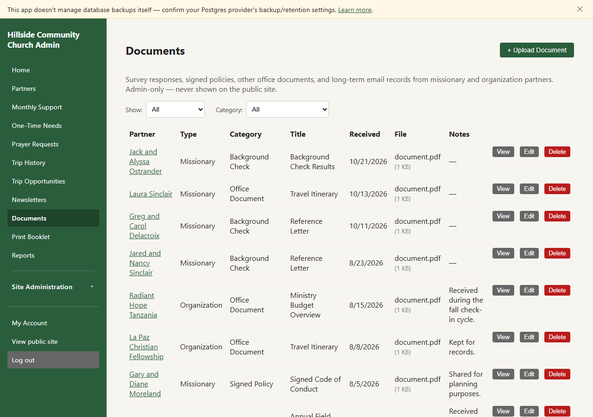
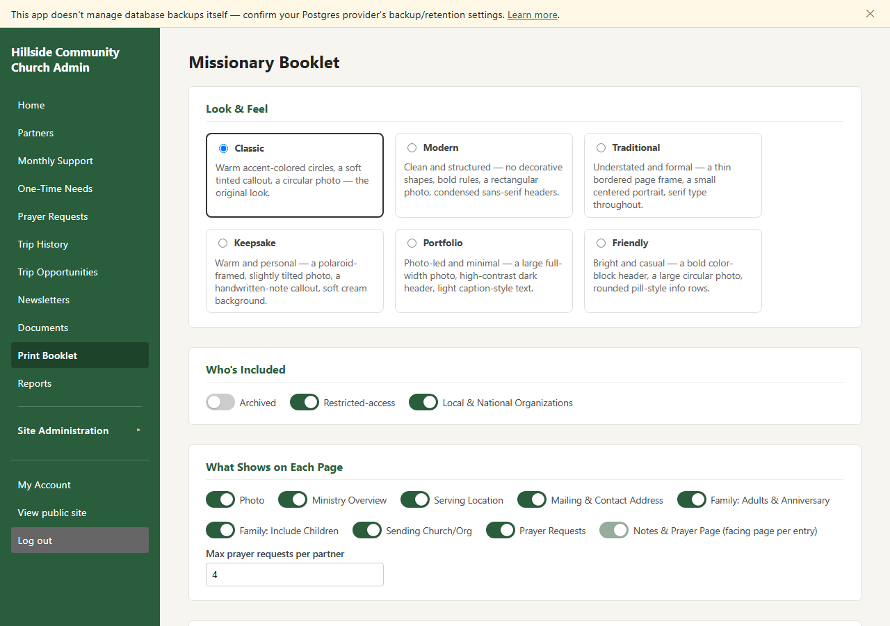
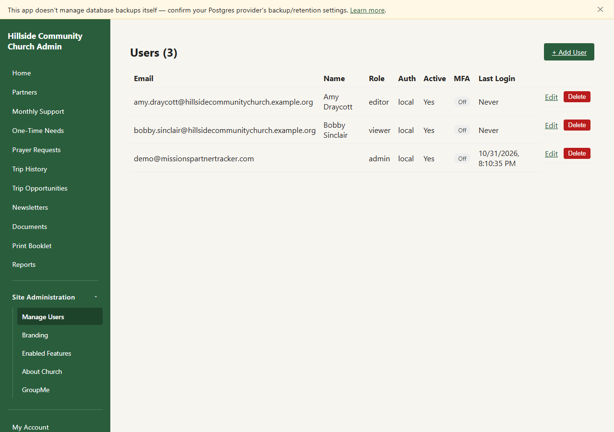
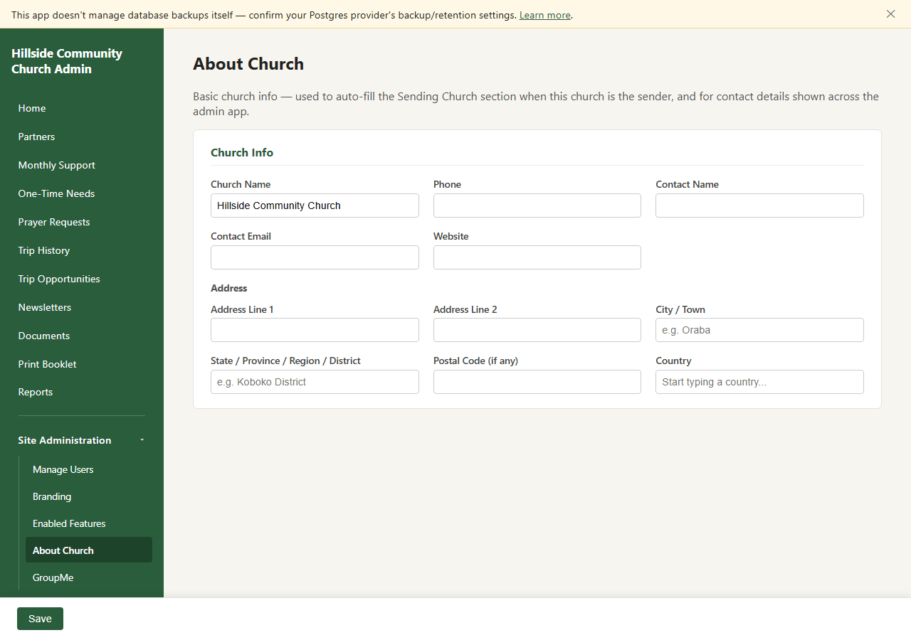
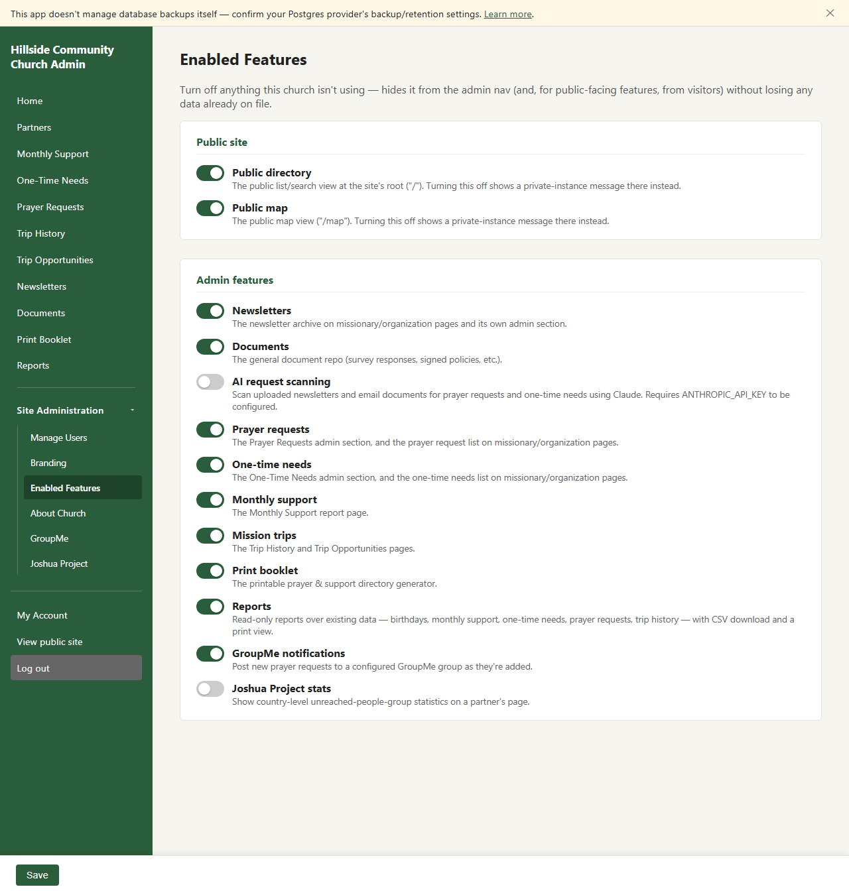
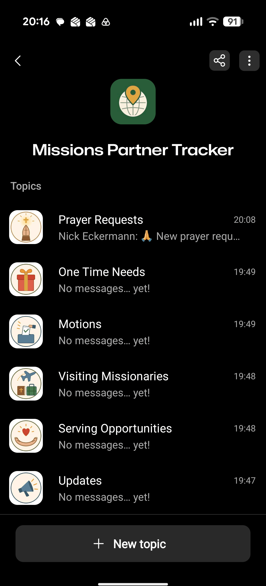
MIT licensed. Fork the repo and deploy your own instance on Render in about $13/mo — one web service plus one Postgres database, which also holds every uploaded photo, newsletter, and document, so there's no separate file storage to provision.